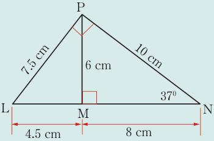
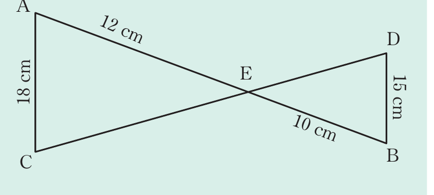

Solution
Consider △PMN and △LPN.
M̂NP = L̂NP (common).
N̂MP = L̂PN = 90° (given).
M̂PN = P̂LN (third angles of the triangles).
Therefore, △PMN ∼ △LPN (1).
Consider △LMP and △LPN.
M̂LP = P̂LN (common).
L̂MP = N̂PL = 90° (given).
L̂PM = L̂NP (third angles of the triangles).
△LMP ∼ △LPN (2).
Relating (1) and (2), it can be observed that
Since △LPN ∼ △PMN, then the constant of proportionality is given by
Thus,
Therefore, the constant of proportionality needed to show their similarity is 5 : 4 or 5/4.
Example 3.4
In the following figure, find the constant of proportionality needed to obtain a pair of similar triangles, if CE : DE = 1.2 : 1. Name this pair of similar triangles.

Solution
The ratio of lengths of corresponding sides are given by;
Thus,
Therefore, △ACE ∼ △BDE (corresponding sides are proportional) and 6/5 is the constant of proportionality.